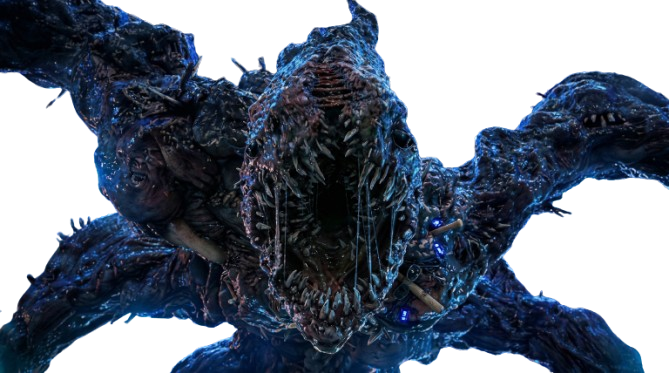

Signal Lost
Mind Flayer Vessel


The Mind Flayer, also known as the Shadow Monster, is the supreme ruler of the Upside Down. A sentient, spider-like entity composed of dark particles, it seeks to conquer other dimensions by possessing hosts and linking them to its Hive Mind.
In your "Signal Lost" version, its form is even more visceral—a mass of distorted flesh and jagged teeth, reflecting its role as an inescapable, cosmic predator.
Let's Fight